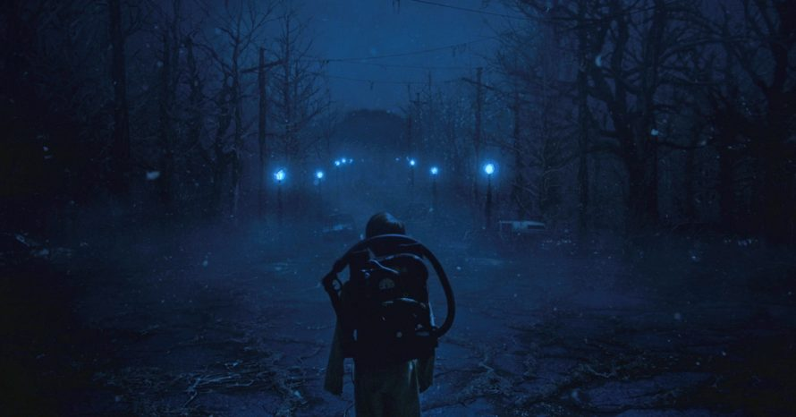
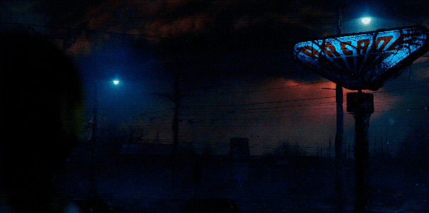
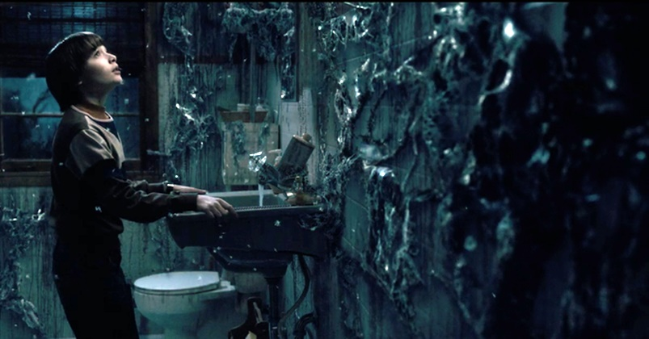
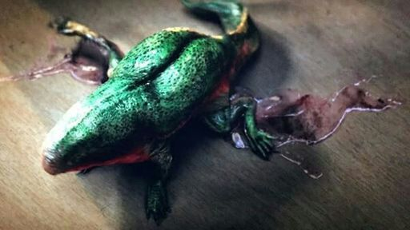
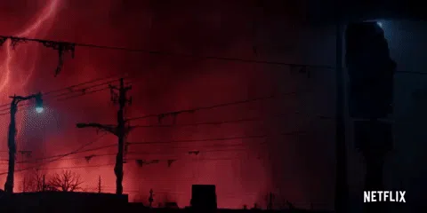
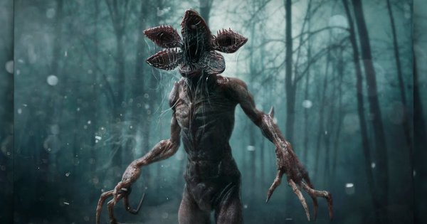

Mundo Invertido

Se você sempre quis compreender melhor o Mundo Invertido, confira abaixo um guia com uma explicação sobre o que é essa dimensão paralela.
O que é o Mundo Invertido e suas possíveis origens

O Mundo Invertido se trata de uma versão bem mais sombria da Terra. O
local possui um visual e locais parecidos com os do mundo real, mas
não possui nenhum ser humano vivendo nele. As leis da física também
valem nesse universo paralelo e ele tem suas versões de locais famosos
de Hawkins, a cidade fictícia em que se passa Stranger Things. No
entanto, eles estão cobertos por uma substância viscosa que está
presente em todos os cantos do Mundo Invertido, além de aparentarem
estar em completo abandono. Além disso, o local vive em uma eterna
escuridão e ainda é habitado por criaturas terríveis e nada amigáveis.
Também não podemos nos esquecer de mencionar a presença de um tipo de
esporo no ar do local. Cientistas de Hawkins afirmaram que a atmosfera
do Mundo Invertido era tóxica para o ser humano, tanto que sempre
visitaram o local com trajes especiais. No entanto, a série já mostrou
que ela só faz mal para as pessoas em caso de exposição prolongada.
Por exemplo, Nancy Wheeler entrou rapidamente no Mundo Invertido e não
sofreu nenhum dano. Já Will Byers, que ficou uma semana preso por lá,
ficou doente por alguns dias. Como você viu, o Mundo Invertido se
trata de um local longe de ser agradável para alguém viver. Até hoje,
Stranger Things não explicou como que essa realidade paralela surgiu e
quais são suas origens exatas. Apenas sabemos que ela foi descoberta
por acidente naquele laboratório que ficava em Hawkins. A principal
especulação dos fãs é que o Mundo Invertido pode ter sido criado por
algum experimento. Algumas teorias afirmam que o local seria nosso
mundo caso um ataque nuclear devastasse a humanidade, justamente por
ele ser uma versão bem sombria da realidade.
Como chegar ao local

Existem algumas formas de ter acesso ao Mundo Invertido de Stranger
Things. Na 1ª temporada, Onze abriu acidentalmente um portal para o
local após entrar em contato com demogorgon e esse foi um dos métodos
mais recorrentes ao longo da série. No final dessa mesma primeira
temporada, Stranger Things revelou que também existem algumas
rachaduras espalhadas por Hawkins que também dão acesso ao Mundo
Invertido. Foi desta forma que Onze foi para no local durante a 2ª
temporada.
As criaturas presentes no Mundo Invertido

Existem duas criaturas que habitam o Mundo Invertido da série e que já
ficaram na memória dos fãs de Stranger Things. A primeira que vamos
citar é o famoso Demogorgon. Ele se trata de uma criatura predatória
que possui uma boca semelhante a de uma planta carnívora. O monstro
possui seis estágios de vida, que lembra bastante a dos anfíbios. A
sexta e última fase de vida do Demogorgon, como sabemos, é a mais
perigosa de todas, justamente por se transformar em uma criatura
humanoide. No entanto, só vimos dois espécimes da criatura nesse
estágio: uma na primeira temporada e a segunda na cena pós-créditos da
terceira. A segunda criatura é o Monstro das Sombras. Ele é o
responsável por controlar o crescimento dos organismos presentes nessa
dimensão. Assim, podemos afirmar que essa realidade se trata de um
superorganismo que está sob o controle dele. O Monstro das Sombras
também tentou expandir sua influência para além do Mundo Invertido e
tentou fazer o mesmo na Terra. No entanto, seus planos foram
interrompidos pelos protagonistas da série nas temporadas 2 e 3 de
Stranger Things.
Monstros do Mundo Invertido

Democães

Os Democães são semelhantes ao Demogorgon na sua boca disforme que se
assemelha a uma flor grotesca e compartilham o apetite por humanos e
animais. Enquanto o monstro da primeira temporada caçava sozinho e
nunca pareceu haver mais do que um da sua espécie, os Democães
apresentam um comportamento muito diferente. Estas novas criaturas
preferem caçar em grupo, semelhantes a uma alcateia, e demonstram
operar com “mente de colmeia”. Isto significa que os democães
funcionam como uma entidade unida, respondem às ordens de um ser
superior e estão profundamente conectados ao seu mestre. Vemos os
limites desta conexão quando as criaturas morrem no momento em que
Eleven consegue fechar o portal entre mundos isso acontece porque
perdem a ligação ao seu mestre e à sua realidade nativa, o Mundo
Invertido.